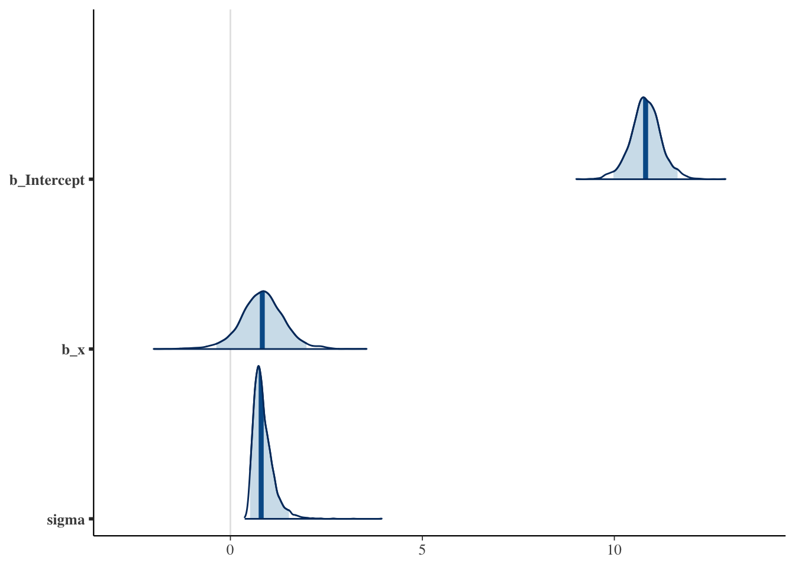

library(tidyverse)
library(magrittr)
library(ggside)
library(brms)
library(tidybayes)
library(posterior)
library(bayestestR)
options(
mc.cores = parallel::detectCores(),
brms.backend = "cmdstanr"
)
set.seed(19780503)Bayesian data analysis (rasmusab)
Resources
YouTube videos
R exercises
DataCamp courses
The data generation process
Data story/Data Generation Process > DAG/Structural Causal Model > Generative Probabilistic Model (function that takes parameters and returns data/observations/sample).
Linear regression
Standard notation:
\[ y_i = \beta_0 + \beta_1 x_i + \epsilon \] \[ \epsilon \sim \mathcal{N}(0, \sigma) \]
Alternative notation:
\[
y_i \sim \mathcal{N}(\mu_i, \sigma)
\] \[
\mu_i = \beta_0 + \beta_1 x_i
\]
n = 2
beta0 = 10
beta1 = 2
sigma = 1
dgp <- function(n, beta0, beta1, sigma) {
x = seq(0, 1, length.out = n)
y = map(x, function(x) {
mu = beta0 + beta1 * x
y = rnorm(5, mu, sigma)
return(y)
})
return(tibble(x, y) %>% unnest(y))
}
d = dgp(n, beta0, beta1, sigma)
d# A tibble: 10 × 2
x y
<dbl> <dbl>
1 0 11.0
2 0 11.5
3 0 10.3
4 0 11.4
5 0 9.92
6 1 12.0
7 1 12.0
8 1 12.5
9 1 10.9
10 1 10.9 d %>% ggplot(aes(x = x, y = y, color = factor(x))) +
geom_point(alpha = 0.5, show.legend = FALSE) +
# geom_ysidedensity(color = "gray", fill = "grey", show.legend = FALSE) +
geom_smooth(method = "lm", color = "grey", show.legend = FALSE) +
geom_abline(intercept = beta0, slope = beta1) +
theme_bw()`geom_smooth()` using formula = 'y ~ x'l = lm(y ~ x, d)
summary(l)
Call:
lm(formula = y ~ x, data = d)
Residuals:
Min 1Q Median 3Q Max
-0.910 -0.709 0.236 0.545 0.880
Coefficients:
Estimate Std. Error t value Pr(>|t|)
(Intercept) 10.828 0.323 33.5 0.00000000069 ***
x 0.822 0.457 1.8 0.11
---
Signif. codes: 0 '***' 0.001 '**' 0.01 '*' 0.05 '.' 0.1 ' ' 1
Residual standard error: 0.723 on 8 degrees of freedom
Multiple R-squared: 0.288, Adjusted R-squared: 0.199
F-statistic: 3.23 on 1 and 8 DF, p-value: 0.11confint(l) 2.5 % 97.5 %
(Intercept) 10.0823 11.573
x -0.2322 1.876b = brm(y ~ x, d)summary(b) Family: gaussian
Links: mu = identity; sigma = identity
Formula: y ~ x
Data: d (Number of observations: 10)
Draws: 4 chains, each with iter = 2000; warmup = 1000; thin = 1;
total post-warmup draws = 4000
Population-Level Effects:
Estimate Est.Error l-95% CI u-95% CI Rhat Bulk_ESS Tail_ESS
Intercept 10.82 0.40 9.98 11.65 1.00 2664 2028
x 0.83 0.58 -0.36 1.98 1.00 2916 1963
Family Specific Parameters:
Estimate Est.Error l-95% CI u-95% CI Rhat Bulk_ESS Tail_ESS
sigma 0.86 0.27 0.51 1.52 1.00 1860 1913
Draws were sampled using sample(hmc). For each parameter, Bulk_ESS
and Tail_ESS are effective sample size measures, and Rhat is the potential
scale reduction factor on split chains (at convergence, Rhat = 1).mcmc_plot(b, type = "areas", prob = 0.95) # launch_shinystan(b)